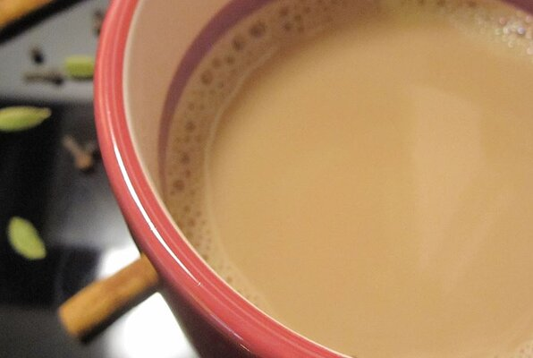

Masala Tea

Description
Deliciously fragrant, sweet and tasty Eastern tea.
Ingridients
- 2 cups water
- 2 tea bags
- 1 whole black peppercorn
- 2 cinnamon sticks
- 2 whole cardamom pods
- 2 whole cloves
- 1/2 cup sweetened condensed milk
Steps
-
Bring the water to a boil in a saucepan over high heat. Reduce the heat
to medium, and stir in the tea bags, peppercorn, cinnamon sticks,
cardamom pods, and cloves. Let boil for 1 minute.
-
Pour in the condensed milk, and bring back to a boil. Remove from the
heat, strain into cups, and serve.